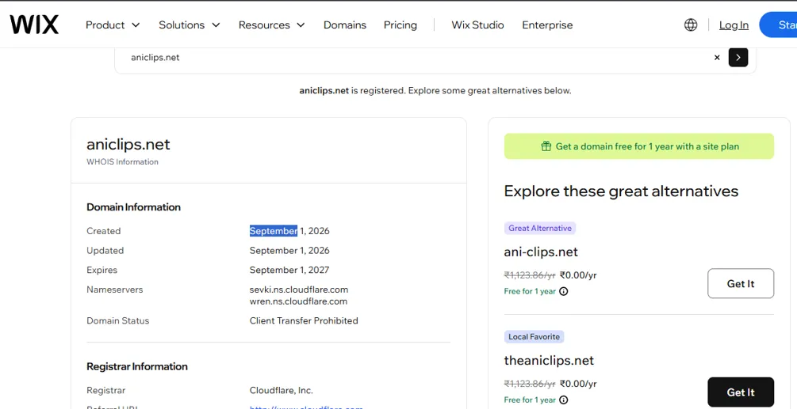
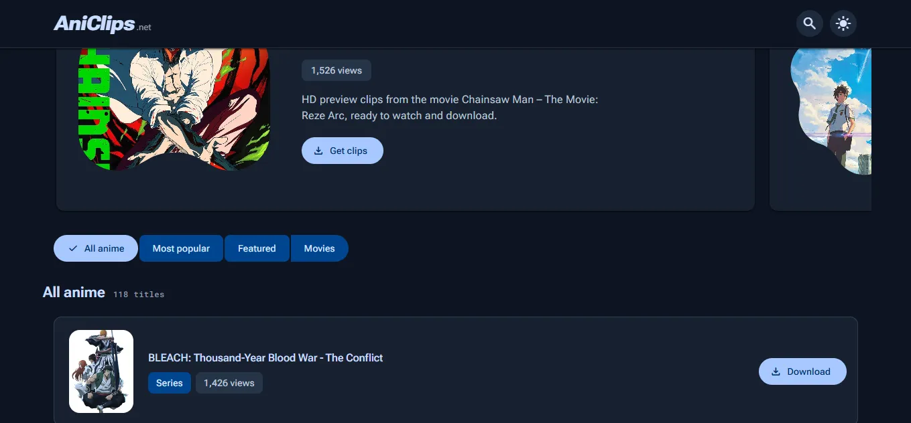
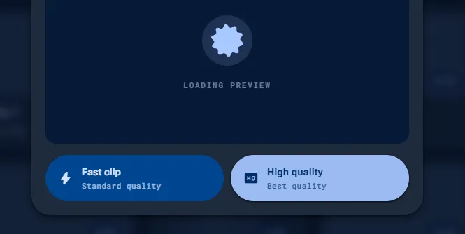
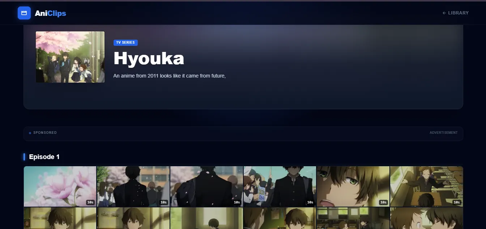
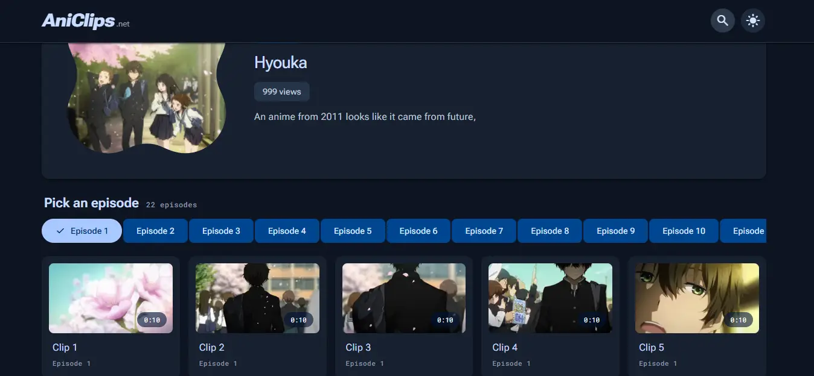
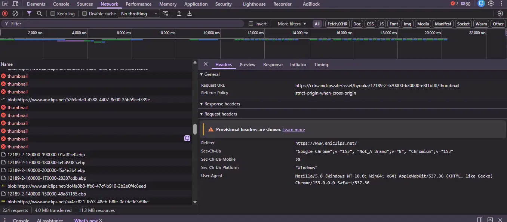

Hi, I'm Previous Stomach, the creator and developer behind AniClips.
I wasn't planning to write this article. Then, on September 20, I found a website called aniclips.net.
At first, I thought:
"Oh. Someone made another anime clips website."
And honestly?
It's not bad at all.
As some great man once said:
"Success is when others copy you."
That was basically my literal reaction when I found out.
For a few minutes, I was almost flattered.
Someone had looked at AniClips and decided it was worth copying.
Then I started looking at what they'd actually copied.
We Found Them Pretty Early
There's another detail that makes this whole thing rather funny.
We checked the domain registration.
The domain aniclips.net was registered on September 1, 2026.
We discovered the site on September 20.
Less than three weeks old.

Domain registration record observed on September 20, 2026
This doesn't prove exactly when the website went live. A domain can be registered before a site is launched. But it does tell us that the domain itself was extremely new when we found it.
At First, It Just Looked Familiar
The first thing that caught my attention was the name.
The new site was called aniclips.net. Our site is aniclips.site.
Names can be similar. That's not particularly interesting by itself.
Then I looked at the interface.


We're not claiming the two interfaces are pixel-for-pixel identical. They aren't.
Their layout isn't identical. Their cards aren't identical. Some AniClips features aren't there at all.
So if this were just about a similar-looking website, I probably wouldn't have bothered writing this article.
Then we started comparing the details.
Fast Clip. HQ Clip.
AniClips has two clip options designed around different editing needs: Fast Clip and HQ Clip.
Fast Clip is intended for getting the footage quickly. HQ Clip is for editors who need the higher-quality source.
This terminology has become part of the AniClips interface and workflow.
And then we found the same distinction, using the same names, on aniclips.net.
AniClips

aniclips.net
One similarity by itself can be coincidence.
But this wasn't the only one.
Then We Compared the Library
This was probably the part that made me stop laughing.
We compared the anime catalog.
Obviously, another anime clips website having popular anime isn't evidence of anything. Of course both websites can have Naruto.
But the overlap went considerably further than that.
The anime that were already in our library were also present there. The descriptions matched. In places, they matched essentially character-for-character.

AniClips

aniclips.net
Popular titles overlapping is normal. But when the catalog, descriptions, terminology and actual clip availability all line up, it becomes a considerably more specific similarity.
And we still hadn't looked underneath the website.
Then We Opened DevTools
At this point, I wanted to know something very simple:
Where was their website actually getting all of this from?
So I watched the browser's network requests.
And we found requests going to AniClips' own public API and content infrastructure.

Network activity observed while inspecting the clone
That connected several things we'd initially been treating as separate clues:
01. Same name.
02. Same Fast Clip / HQ Clip terminology.
03. Same anime library.
04. Matching descriptions.
05. AniClips infrastructure appearing in their network activity.
Suddenly, the similarities weren't particularly mysterious anymore.
How Was This Even Possible?
At this point, a reasonable question is:
"If they were using AniClips' infrastructure, why didn't we simply block them?"
The uncomfortable answer is that the architecture of AniClips makes this surprisingly difficult.
And that's partly intentional.
AniClips Was Designed to Be Cheap
AniClips isn't operated like a giant commercial video platform with a massive infrastructure budget.
The architecture was deliberately designed around one important constraint:
It needed to be cheap enough to actually run.
Instead of forcing one central server to personally handle every piece of every video request, AniClips distributes processing and content delivery across different parts of the system.
The backend handles the things that actually need a backend. Workers handle processing. Distributed storage handles large files. The browser retrieves what it needs.
The central server doesn't have to do everything.
That's a huge part of why AniClips can exist without the operating costs of a conventional centralized video platform.
Cheap Infrastructure vs. Absolute Control
The same architecture that keeps AniClips affordable also means that legitimate browsers need access to the resources required to use the site.
More centralized control
More bandwidth, compute, infrastructure and operating cost.
Distributed architecture
Much lower central infrastructure requirements, but less absolute control over every client request.
The Frontend Isn't a Vault
Think about what happens when you open an AniClips episode.
Your browser needs to know which anime you're looking at, which episodes exist, which clips belong to an episode, and where those clips can be retrieved.
That information ultimately has to reach the client.
And once a legitimate browser can retrieve a resource, another client can potentially attempt to make the same legitimate request.
That's the fundamental problem.
We can add barriers. We can rate-limit. We can monitor suspicious traffic. We can make automated abuse more expensive.
But we can't simultaneously make something freely retrievable by our users and fundamentally impossible for another client to retrieve.
Why Not Just Make Everything Private?
This is probably the most obvious suggestion.
"Just put everything behind a private server."
Technically, we could make the architecture much more restrictive.
But if every clip request had to pass through a heavily centralized private backend, that backend would have to handle substantially more of the work.
Bandwidth
Compute
Infrastructure
Cost
Eventually, we'd be turning a deliberately cheap distributed system into a much more expensive centralized video platform.
We'd be protecting the library so aggressively that we could no longer afford to run the library.
Why Was It So Easy for Them?
Because they didn't have to reproduce the difficult part.
Imagine building a library from scratch.
That's a lot of work.
Now imagine somebody else has already done most of it.
The amount of work is dramatically smaller.
That's the asymmetry we're dealing with.
And Honestly, This Part Hurts
The technical side of this is interesting.
But that's not really what bothers me.
It hurts.
AniClips isn't some faceless corporation with a legal department and a hundred engineers.
It's a project I've spent months building because I genuinely wanted anime editing to be less annoying.
The decisions behind the site come from actual editing problems.
Why do I need to download an entire episode to find five seconds?
Why can't I quickly browse scenes?
Why can't I preview something before downloading it?
Why should every editor have to use the same quality workflow?
Why does finding one stupid clip sometimes feel like a research project?
Those are the problems AniClips was built around.
That's why we have things like Fast Clip and HQ Clip. That's why we built previews. That's why there's episode navigation. That's why there's an anime request system. That's why we're working toward better tagging and search.
It's supposed to be a tool for editors.
And Then There's aniclips.net
Looking at what they've built, I don't see the same priority.
The site is substantially more advertising-heavy than AniClips.
And I'm going to be blunt:
I believe they built this primarily for money.
Not because they cared about improving the workflow of anime editors. Not because they had some great new idea for finding scenes. Not because they wanted to build a better editing tool.
From what we've observed, the approach looks much simpler:
Maybe I'm wrong about the person behind the site. I don't know them personally.
But I'm also not going to pretend I can't look at what they've built and form an opinion about it.
We're Not Untouchable
This is another thing I want to be honest about.
Sometimes companies talk about copying as if it doesn't matter. "They're copying us. That's just proof we're innovating."
Cool.
But I'm not a giant company.
I'm one person building AniClips.
If someone takes months of my work and turns it into a competing website, of course that can actually hurt me.
It can affect traffic. It can affect revenue. It can consume infrastructure resources. And it can simply feel shitty.
I'm not going to write:
"We welcome healthy competition and remain committed to our users."
I'm pissed off.
And that's okay.
But Here's What AniClips Is Actually About
There's one thing I don't want this article to distract from.
AniClips exists because people actually use it.
People request anime through the site. People occasionally find us through Reddit and ask whether we can add a particular series.
Sometimes someone asks for an anime we've never added before. And I just reply:
Sometimes customer support is just "sure."
Then I go add it.
It's not a giant corporation. It's not some enormous team.
It's a project that started because I was annoyed by how difficult it was to find the exact anime clips I wanted for editing.
That's the difference.
They Can Copy Today. They Can't Copy Tomorrow.
Someone can copy the interface.
Someone can copy the terminology.
Someone can copy the library.
Someone can even build another frontend around infrastructure that already exists.
But they can't retroactively copy why we built AniClips in the first place.
And they certainly can't copy the work we're doing next.
So, Yeah.
We found the clone.
We investigated it.
We have the screenshots.
We contacted them.
And we're not going to pretend it doesn't bother us.
But we're also not stopping.
We have clips to process.
We have requests to fulfill.
We have V5 to finish.
And we have a ridiculous number of ideas left.
Someone can copy what AniClips looks like today.
We're building what AniClips becomes tomorrow.
— Previous Stomach
Creator & Lead Developer, AniClips